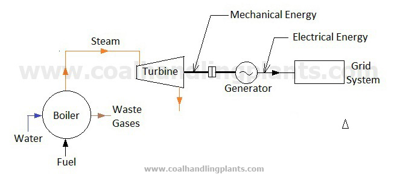
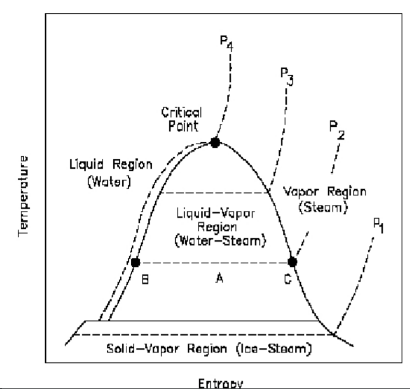
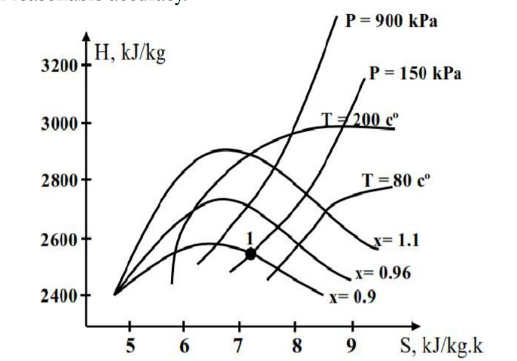
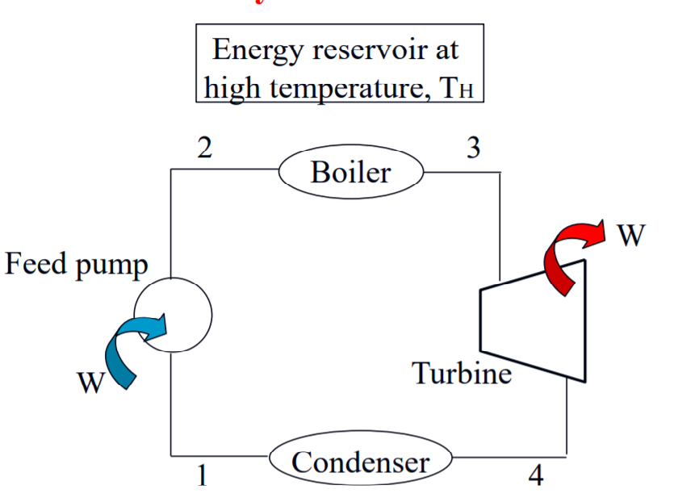
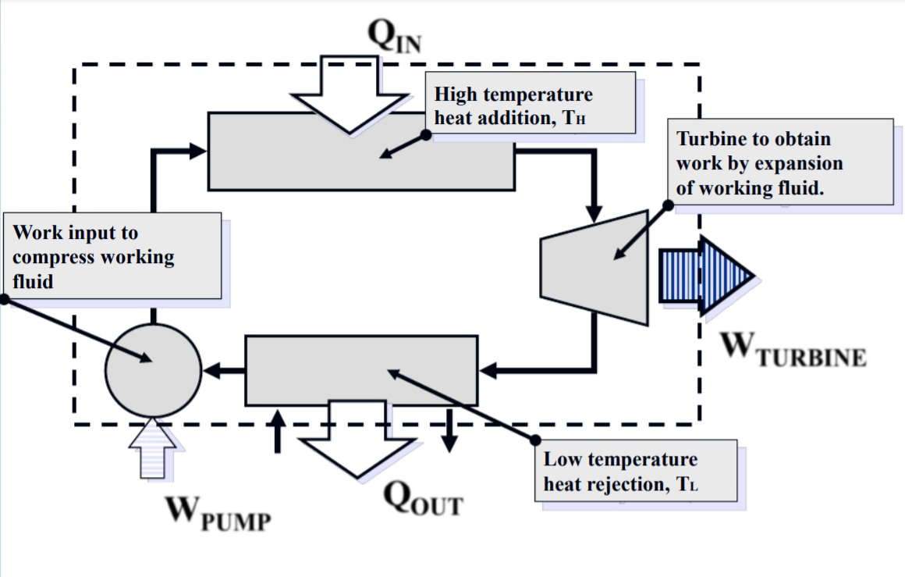
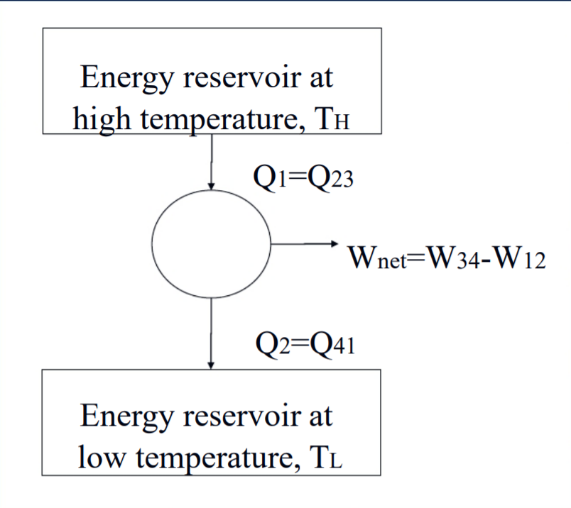
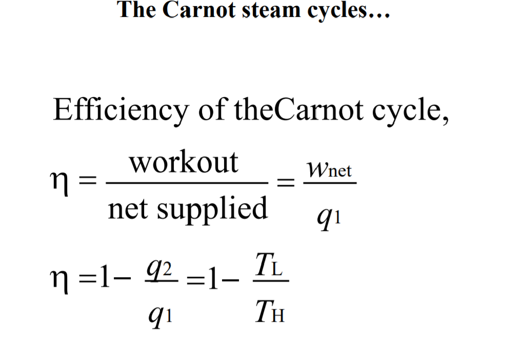

Steam Power Plant
Introduction
The Purposes Of Steam Generated:
- Power: Steam Engines, Steam Turbine, Steam Pumps.
- Drying: Bleaching, Plam Kernel, Iron Curing Concrete.
- Strelizing: Operation Theater Equipment, Plam Oil.
- Heating: Building, Bulk Storage.
- Cooking: Pressure Cooking, Steam Jackets.
The Purposes Of Steam Power Plant: To Produce Electric Power.

Important Definition
- Saturation temperature
- is the temperature a pure substance start boiling at certain pressure, this pressure is called saturation pressure.
- Saturated liquid
- if a pure substance exists as liquid at saturation temperature and pressure, it is called saturated liquid.
- Wet mixture
- is the mixture of liquid and its vapor
- Saturated vapor
- if a pure substance exists as vapor at saturated temperature and pressure, it is called saturated vapor.
- Moisture content (y)
- is the ratio of liquid mass to the total mass (mass of liquid and mass of vapor).
- Dryness fracture (x)
- is a ratio of vapor mass to the total mass.
- Enthalpy of vaporization (hfg)
- r latent heat of vaporization, It represent the amount of energy needed to vaporize a unit mass of saturated liquid at a given temperature or pressure. It decreases as the temperature or pressure increases, and it is becomes Zero at the critical point.
- Super heated vapor
- When the temperature of the vapor is higher than the saturated temperature of this vapor is called super heated vapor.
- Degree of super heated
- is the difference between the saturated temperature and super heated temperature. Degree = Tsup-Tsat
- Enthalpy of water (hf)
- is the enthalpy of heat absorbed by unit mass of water at constant pressure until it reaches to the temperature of vapor forming from (0C).
hf= c(T - 0) T: temp. of vapor forming.
c: specific heat of water (4.2 kJ/kg.k) - Enthalpy of dry steam (hg)
- is the quantity of head which needed to change unit mass of water at (0 ºC) to dry steam.
hg= hf + L(hfg) = hf+hfg - Enthalpy of wet steam (hx)
- hx= (1 - x) hf+ xhfg
This relation can also be expressed
hx= hf + xhfg Where (hfg= hg-hf )
Solving for quality, we obtain
x=(hx - hf) / hfg - The h - S diagram
- The h - S diagram is also called Mollier diagram. The general features of h - S diagram are shown in the following fig.The h - S diagrams are commonly used in practice to determine the properties of steam with reasonable accuracy.
- The T - S diagram
- The T - S diagram is the type of diagram most frequently used to analyze energy transfer system-cycles.


The Carnot Steam Cycle




- The Carnot Steam Cycles...
- Limiting of heat transfer which severely limits the maximum temperature that can be used in the cycle and the thermal efficiency (Higher power requirement)
- Not practical to design a compressor that handles two phases (Not homogeneous)
- Difficult to control the condensation process at the desired quality
- High quality of steam decrease or high contents of liquid droplets cause erosion and wear at turbine blades